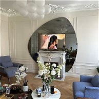

On appelle TV Miroir, un écran placé derrière un miroir semi-transparent. Il s’apparente à un simple miroir totalement homogène quand l’écran est éteint mais dès que l’écran est allumé une image s’affiche et devient visible
